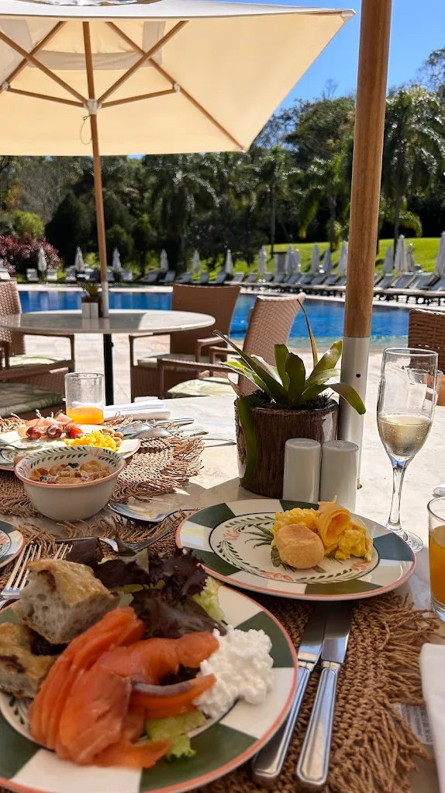
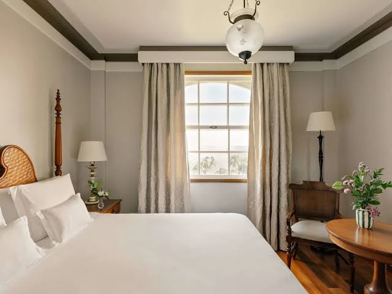
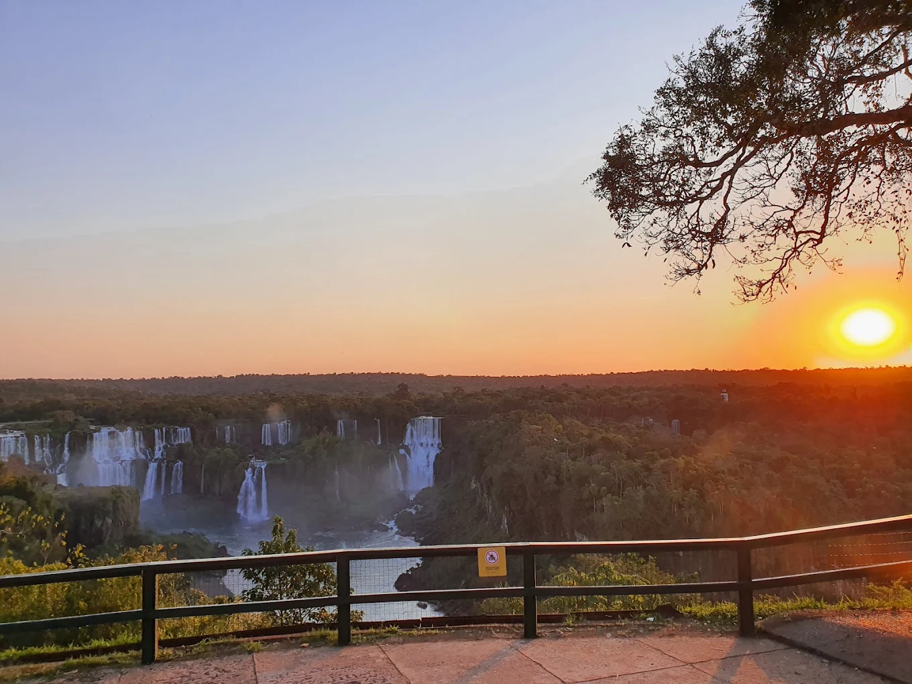

Cataratas
Hotel das Cataratas
Imagine acordar cercado pelo som da floresta e, ao abrir a janela, estar diante de uma das sete maravilhas naturais do mundo: as Cataratas do Iguaçu. O Hotel das Cataratas é um refúgio colonial português em meio à selva, com arquitetura elegante, jardins impecáveis e uma atmosfera que mistura romantismo e exclusividade. Sua localização dentro do Parque Nacional torna o ambiente ainda mais especial, transmitindo uma sensação única de paz e contato íntimo com a natureza.

Gastronomia
O hotel oferece experiências gastronômicas dignas de grandes centros urbanos, mas com o charme da floresta como pano de fundo. O Restaurante Itaipu encanta com pratos brasileiros contemporâneos e internacionais, preparados com ingredientes frescos e sofisticados. No Bar Tarobá, os hóspedes podem degustar coquetéis autorais enquanto apreciam o pôr do sol sobre a mata.
Acomodação
Os quartos são um convite ao conforto, com decoração clássica, móveis de madeira maciça e tecidos nobres. Muitas suítes oferecem vistas diretas para a natureza exuberante, e algumas contam com varandas privativas. A combinação entre tradição e luxo cria um ambiente acolhedor e requintado.


Atrativos
Além do acesso exclusivo às Cataratas fora do horário de visitação, o hotel conta com uma belíssima piscina ao ar livre cercada por palmeiras, spa de inspiração amazônica e passeios guiados pela fauna e flora do parque. A experiência é completada por atividades como observação de aves, caminhadas ecológicas e degustações temáticas.